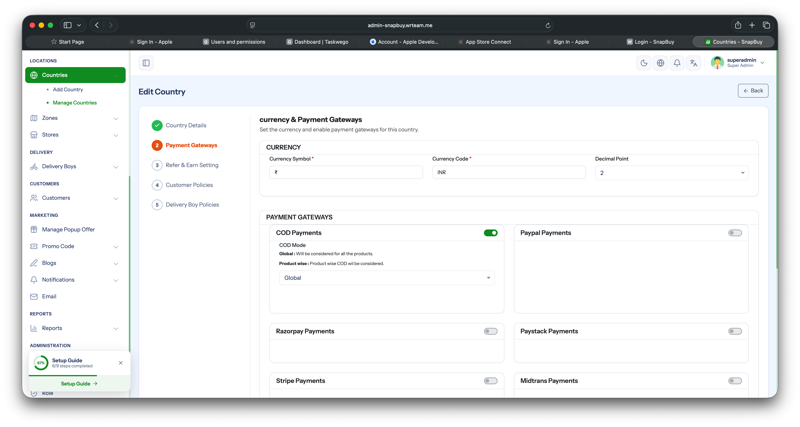
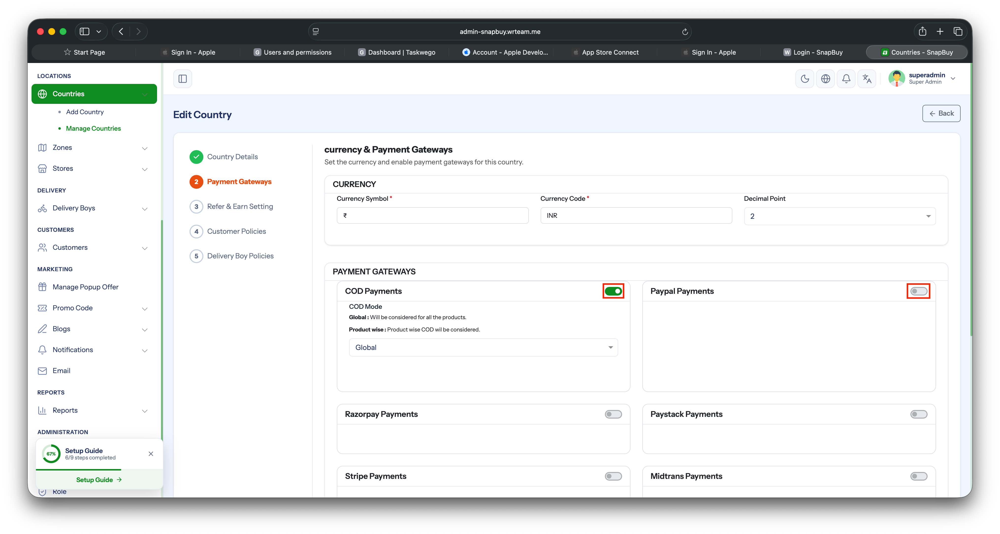

Manage Payment Gateway and Credentials
Configure which payment gateways are available in the app and enter their API credentials.
Supported Gateways
The system has built-in integration for the following payment gateways:
- COD (Cash on Delivery)
- PayPal
- Razorpay
- Paystack
- Stripe
- Midtrans
- PhonePe
- Cashfree
- PayTabs
Only these gateways can be added — pick the ones which most closely match your business needs.
1. Add and Configure a Gateway
- Open your Admin Panel.
- Navigate to Settings → Payment Gateway.
- Click Payment Gateway Setting and select one from the supported list.
- Enter the required credentials (API keys / secrets / publishable key, depending on the gateway).
- Click Save.

2. Activate / Deactivate an Existing Gateway
To turn an already-added gateway on or off without deleting its credentials:
- Return to Settings → Payment Gateway.
- Find the gateway in the list and click Edit.
- Toggle the Status field (Active / Inactive).
- Click Save.

Tip
You can keep credentials saved for multiple gateways and only mark one as Active at a time — useful when switching providers without re-entering keys.